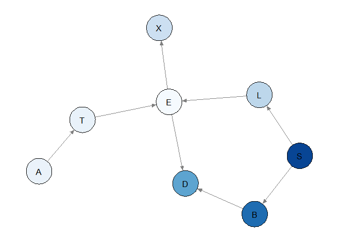
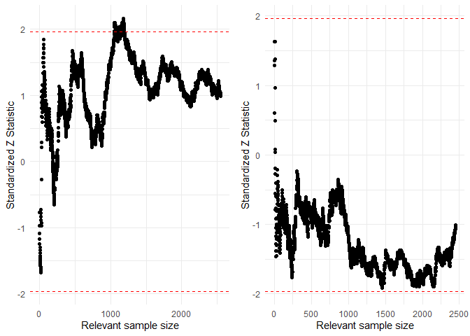
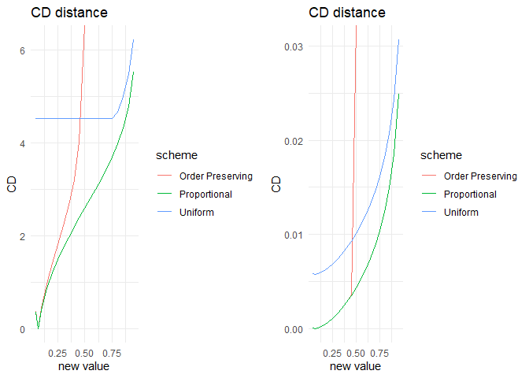

bnmonitor is a package for sensitivity analysis and robustness in Bayesian networks (BNs).
Installation
The package bnmonitor can be installed from GitHub using the command
# install.packages("devtools")
devtools::install_github("manueleleonelli/bnmonitor")
#>
#> * checking for file 'C:\Users\Manuele.Leonelli\AppData\Local\Temp\RtmpagcbTt\remotesda4396c5d90\manueleleonelli-bnmonitor-bbfcea8/DESCRIPTION' ... OK
#> * preparing 'bnmonitor':
#> * checking DESCRIPTION meta-information ... OK
#> * checking for LF line-endings in source and make files and shell scripts
#> * checking for empty or unneeded directories
#> NB: this package now depends on R (>= 3.5.0)
#> WARNING: Added dependency on R >= 3.5.0 because serialized objects in
#> serialize/load version 3 cannot be read in older versions of R.
#> File(s) containing such objects:
#> 'bnmonitor/data/cachexia_ci.RData'
#> 'bnmonitor/data/cachexia_data.RData'
#> 'bnmonitor/data/cachexia_gbn.RData' 'bnmonitor/data/chds.RData'
#> 'bnmonitor/data/chds_bn.RData' 'bnmonitor/data/chds_bn.fit.RData'
#> 'bnmonitor/data/control_ci.RData' 'bnmonitor/data/control_gbn.RData'
#> 'bnmonitor/data/diabetes.RData' 'bnmonitor/data/mathmarks.RData'
#> 'bnmonitor/data/synthetic_ci.RData'
#> 'bnmonitor/data/synthetic_gbn.RData'
#> * building 'bnmonitor_0.1.2.tar.gz'
#> and loaded in R with
Note that bnmonitor requires the package gRain which, while on CRAN, depends on packages that are on Bioconductor both directly and through the gRbase package, which depends on RBGL:
install.packages("BiocManager")
BiocManager::install(c("graph", "Rgraphviz", "RBGL"))
install.packages("gRain")Overview
bnmonitor provides a suite of function to investigate either a data-learnt or an expert elicited BN. Its functions can be classified into three main areas:
- Robustness in discrete BNs: checking how well a BN represents a dataset;
- Sensitivity in discrete BNs: assessing the effect of changes in the discrete BN’s probabilities;
- Sensitivity in continuous BNs: assessing the effect of changes in the continuous BN’s probabilities, either in the standard or model-preserving framework
Robustness
Consider the asia dataset available from bnlearn. Details of the variables can be found in the bnlearn documentation.
library(bnlearn)
#> Warning: package 'bnlearn' was built under R version 4.1.1
data(asia)
summary(asia)
#> A S T L B E X
#> no :4958 no :2485 no :4956 no :4670 no :2451 no :4630 no :4431
#> yes: 42 yes:2515 yes: 44 yes: 330 yes:2549 yes: 370 yes: 569
#> D
#> no :2650
#> yes:2350Consider two candidate BN models (Lauritzen and Spiegelhalter, 1988), which only differ in the edge from S to D.
asia_bn <- bnlearn::model2network("[A][S][T|A][L|S][B|S][D|B:E][E|T:L][X|E]")
bnlearn::graphviz.plot(asia_bn) 
asia_bn_alt <- bnlearn::model2network("[A][S][T|A][L|S][B|S][E|T:L][X|E][D|B:E:S]")
bnlearn::graphviz.plot(asia_bn_alt) 
Global monitor
A first useful diagnostic is the global_monitor, reporting the contribution of each vertex to the log-likelihood of the model.
glob_asia <- node_monitor(dag = asia_bn, df = asia, alpha = 3)
glob_asia_alt <- node_monitor(dag = asia_bn_alt, df = asia, alpha = 3)
glob_asia
#> Vertex Score
#> 1 A 249.74568
#> 2 B 3020.72273
#> 3 D 2144.16059
#> 4 E 26.31263
#> 5 L 1101.55381
#> 6 S 3469.43743
#> 7 T 260.38452
#> 8 X 851.22579
glob_asia_alt
#> Vertex Score
#> 1 A 249.74568
#> 2 B 3020.72273
#> 3 D 2153.19484
#> 4 E 26.31263
#> 5 L 1101.55381
#> 6 S 3469.43743
#> 7 T 260.38452
#> 8 X 851.22579In the alternative model, Dysnopea contributes more to the log-likelihood.
Global monitors can be plotted giving a quick view of the decomposition of the log-likelihood. The darker the color, the more substantial the contribution of a vertex.
plot(glob_asia)
Node monitor
There are two variants of node monitors.
The marginal node monitor computes the probability of the
th observation in the data set in turn after passing the evidence of the
th cases in the data set.
The conditional node monitor computes the probability of the
As a quick survey of the nodes, the node_monitor command computes the marginal and conditional monitors for the final observation in the data set.
node_asia <- final_node_monitor(dag = asia_bn, df = asia)
node_asia
#> node marg.z.score cond.z.score
#> 1 A -0.1029759 -0.1029862
#> 2 S -114.8350581 -118.7946397
#> 3 T -0.1054182 -0.1054288
#> 4 L -0.3013303 -0.3013649
#> 5 B -34.6833789 -35.0407002
#> 6 E -0.3226028 -0.3226405
#> 7 X -0.4234203 -0.4234785
#> 8 D -10.4048397 -10.3678671The scores indicate a poor fit of the probability distributions specified for the Smoking, Bronchitis, and Dysnopea nodes, since these are larger than 1.96 in absolute value. Plots can also be created to give a visual counterpart of the node monitors.
plot(node_asia, which = "marginal")
As an illustration we investigate further the fit of the variable Dysnopea.
The sequential marginal monitor seq_marg_monitor gives us a closer look at which particular forecasts in the data set might cause this poor fit. We examine the sequential monitor for both candidate models.
seq_asia <- seq_marg_monitor(dag = asia_bn, df = asia, node.name = "D")
seq_asia_alt <- seq_marg_monitor(dag = asia_bn_alt, df = asia, node.name = "D")
seq_asia
#> Marginal Node Monitor for D
#> Minimum -2.182895
#> Maximum 0.446613
seq_asia_alt
#> Marginal Node Monitor for D
#> Minimum -2.408245
#> Maximum 0.1543135
library(gridExtra)
grid.arrange(plot(seq_asia),plot(seq_asia_alt),ncol=2)
Both monitors indicate that for some observations there is a poor fit (score above 1.96 in absolute value). In particular for the alternative models the marginal monitor has larger values in absolute value.
A similar analysis can be conducted with seq_marg_monitor, which would show that the model fits well (not reported here).
Parent Child monitor
Once a vertex has been identified as a poor fit, further investigation can be carried out to check for which values of the parents the model provides a bad representation. This can be achieved with the seq_pa_ch_monitor function.
As an illustration consider the asia_bn BN, the vertex D (Dysnopea), the parent variable B (Bronchitis) which can take values yes and no.
asia_pa_ch1 <- seq_pa_ch_monitor(dag = asia_bn, df = asia, node.name = "D", pa.names = "B", pa.val = "yes", alpha = 3)
asia_pa_ch1
#> Parent Child Node Monitor
#> Minimum -1.674971
#> Maximum 2.158953
asia_pa_ch2 <- seq_pa_ch_monitor(dag = asia_bn, df = asia, node.name = "D", pa.names = "B", pa.val = "no", alpha = 3)
asia_pa_ch2
#> Parent Child Node Monitor
#> Minimum -1.911069
#> Maximum 1.629946
grid.arrange(plot(asia_pa_ch1),plot(asia_pa_ch2), ncol = 2)
For this model, Dysnopea is adequately modeled for both values of Bronchitis, since most scores largely fall in the recommended range.
Influential observations
The last robustness tool is the absolute value of the log-likelihood ratio between a model learnt without one observation and the one learnt with the full dataset. Larger values are associated to atomic events which influence the structural learning.
influence <- influential_obs(dag = asia_bn, df = asia, alpha = 3)
head(influence)
#> A S T L B E X D score
#> 1 no yes no no yes no no yes 1.448996
#> 2 no yes no no no no no no 2.246368
#> 3 no no yes no no yes yes yes 6.218600
#> 4 no no no no yes no no yes 2.223474
#> 5 no no no no no no no yes 3.435658
#> 6 no yes no no no no no yes 4.443592
plot(influence)
Sensitivity in Discrete Bayesian Networks
The functionalities of bnmonitor for sensitivity analysis in Discrete Bayesian Networks are illustrated using the fire_alarm network bundled within the package representing a simple alarm system for fire accidents.
graphviz.plot(fire_alarm)
The network consists of 6 nodes (Fire, Smoke, Tampering, Alarm, Leaving and Report) of either two or three levels.
Covariation schemes
The aim of a sensitivity analysis is to assess how parameter changes affect output probabilities of interest. When one parameter changes than others need to be adjusted and this can be done in many ways, including proportional, uniform and order-preserving schemes. Suppose we vary the probability that Alarm = FALSE given that Fire = TRUE and Tampering = FALSE from 0.01 to 0.1. The resulting probabilities from the proportional covariation scheme can be computed as follows.
proportional_covar(bnfit = fire_alarm, node = "Alarm", value_node = "FALSE", value_parents = c("TRUE","FALSE"), new_value = 0.1)$Alarm$prob
#> , , Tampering = TRUE
#>
#> Fire
#> Alarm TRUE FALSE
#> TRUE 0.60000000 0.65000000
#> MALFUNCTION 0.20000000 0.20000000
#> FALSE 0.20000000 0.15000000
#>
#> , , Tampering = FALSE
#>
#> Fire
#> Alarm TRUE FALSE
#> TRUE 0.83636364 0.00010000
#> MALFUNCTION 0.06363636 0.65000000
#> FALSE 0.10000000 0.34990000The functions uniform_covar and orderp_covar have the same inputs and return the BN where probabilities are updated using uniform and order-preserving covariation, respectively.
Sensitivity functions
Suppose we are interested in the probability that Report = TRUE and how this varies with respect to the probability that Alarm = FALSE conditional on Fire = TRUE and Tampering = FALSE. This can be computed with the function sensitivity.
sens <- sensitivity(bnfit = fire_alarm, interest_node = "Report", interest_node_value = "TRUE" , node = "Alarm" , value_node = "FALSE", value_parents = c("TRUE","FALSE"), new_value = "all", covariation = "all")
plot(sens)
For all covariation schemes as the conditional probability of Alarm = FALSE increases, the probability of Report = TRUE decreases. The uniform covariation scheme is reported in red, the proportional in green and the order-preserving in blue.
The function sensitivity also allows for conditional probabilities of interest, not only marginals, which can be set by the options evidence_nodes and evidence_states.
For such changes in the probability distribution of a BN, we can compute the distance between the original and the varied networks using the Chan-Darwiche distance (CD) and the Kullback-Leibler divergence (KL). As an example consider Alarm = MALFUNCTIOn conditional on Fire = TRUE and Tampering = FALSE.
cd_distance <- CD(fire_alarm, node = "Alarm", value_node = "MALFUNCTION", value_parents = c("TRUE","FALSE"), new_value = "all", covariation = "all")
kl_divergence <- KL(fire_alarm, node = "Alarm", value_node = "MALFUNCTION", value_parents = c("TRUE","FALSE"), new_value = "all", covariation = "all")
grid.arrange(plot(cd_distance), plot(kl_divergence),ncol=2)
As expected proportional covariation has the smallest distance/divergence of all covariation schemes.
Sensitivity queries
Another task in sensitivity analysis is to identify parameter changes that meet a specific constraint. As an example suppose we want the probability Report = TRUE to be equal to 0.4. Which parameters could we change to obtain such a probability? The answer can be obtained using the function sensquery.
sensquery(bnfit = fire_alarm, interest_node = "Report", interest_node_value = "TRUE", new_value = 0.4)
#> Node Value node Value parents Original value Suggested change
#> 1 Leaving TRUE MALFUNCTION 0.7300 0.7983961
#> 2 Report TRUE TRUE 0.7500 0.8164951
#> 3 Tampering TRUE 0.0200 0.2018769
#> 4 Fire TRUE 0.0100 0.1252059
#> 5 Alarm TRUE FALSE,FALSE 0.0001 0.1106591
#> CD distance
#> 1 0.3816771
#> 2 0.3941673
#> 3 2.5172158
#> 4 2.6510913
#> 5 7.1262142There are five parameter changes that would lead to a probability of Report = TRUE of 0.4. These are ordered by the value of the CD distance between the original and the new network, from smallest to largest.
Gaussian Bayesian networks
The functionalities of bnmonitor for sensitivity analysis in Gaussian BNs are illustrated next using the mathmarks dataset bundled within the package.
data(mathmarks)
head(mathmarks)
#> mechanics vectors algebra analysis statistics
#> 1 77 82 67 67 81
#> 2 63 78 80 70 81
#> 3 75 73 71 66 81
#> 4 55 72 63 70 68
#> 5 63 63 65 70 63
#> 6 53 61 72 64 73The data includes the grades (out of 100) of students in five maths exams: mechanics, vectors, algebra, analysis and statistics.
The structure of a BN for this data is first learnt using the package bnlearn and the maximum likelihood estimate of its parameters is computed and stored in bnfit.

bnfit <-bn.fit(bn, mathmarks)To start the sensitivity analysis for the parameters of the learnt BN, one first need to transform bnfit to objects of class GBN (for standard sensitivity analysis) and CI (for model-preserving sensitivity). This can be done using the functions bn2gbn and bn2ci respectively.
Perturbation of the mean vector
A varied Gaussian BN after a perturbation of an entry of the mean vector can be obtained with the function mean_var, which can only be applied to an object of class GBN. Below, we vary the fifth entry of the mean vector (statistics) by an additive factor 10.
mean_varied <- cbind(gbn$order, round(gbn$mean, 2),round(mean_var(gbn = gbn, entry = 5, delta = 10)$mean, 2))
colnames(mean_varied) <- c("Course", "Original Mean", "Varied Mean")
mean_varied
#> Course Original Mean Varied Mean
#> [1,] "mechanics" "38.95" "38.95"
#> [2,] "vectors" "50.59" "50.59"
#> [3,] "algebra" "50.6" "50.6"
#> [4,] "analysis" "46.68" "46.68"
#> [5,] "statistics" "42.31" "52.31"The overall effect of such variations can be assessed in terms of dissimilarity measures: the Kullback-Leibler divergence (KL) and Jeffrey’s divergence (Jeffreys). For instance, let’s see what’s the effect of variations in the mean of the statistics exam.
kl_var5 <- KL(gbn, where = "mean", entry = 5, delta = seq(-10,10,0.1))
jef_var5 <- Jeffreys(gbn, where = "mean", entry = 5, delta = seq(-10,10,0.1))
grid.arrange(plot(kl_var5), plot(jef_var5), ncol = 2)
More interestingly, one can check the different effect of variations of different parameters (code not shown).

Misspecifications of the mean of the algebra exam would have the biggest effect on the distribution of the Gaussian BN, since it leads to the biggest distance between the original and the varied network.
Perturbation of the covariance matrix
Care must be taken when performing perturbations of the covariance matrix, for two reasons:
the perturbed matrix may not be positive semidefinite;
the perturbed matrix may not respect the conditional independences of the underlying BN.
Suppose we are interested in assessing the effect of varying the covariance between Statistics and Vectors.
gbn$order
#> [1] "mechanics" "vectors" "algebra" "analysis" "statistics"
gbn$covariance
#> [,1] [,2] [,3] [,4] [,5]
#> [1,] 305.7680 127.22257 101.57941 100.88420 109.66411
#> [2,] 127.2226 174.23649 85.65601 85.06978 92.47337
#> [3,] 101.5794 85.65601 114.56549 113.78140 123.68375
#> [4,] 100.8842 85.06978 113.78140 223.30480 157.73746
#> [5,] 109.6641 92.47337 123.68375 157.73746 303.49318The parameter of interest correspond to the entry (2,5) of the covariance matrix.
A standard perturbed covariance matrix can be constructed with the covariance_var function. Suppose we want to increase the covariance between Statistics and Vectors by an additive factor of 10.
d <- 10
covariance_var(gbn, entry = c(2,5), delta = d)$covariance
#> [,1] [,2] [,3] [,4] [,5]
#> [1,] 305.7680 127.22257 101.57941 100.88420 109.6641
#> [2,] 127.2226 174.23649 85.65601 85.06978 102.4734
#> [3,] 101.5794 85.65601 114.56549 113.78140 123.6837
#> [4,] 100.8842 85.06978 113.78140 223.30480 157.7375
#> [5,] 109.6641 102.47337 123.68375 157.73746 303.4932The above perturbation made the original network structure not valid for the new covariation matrix. In order to ensure that the perturbed covariance is still valid for the underlying network structure, we can use model-preserving methods. These apply multiplicatively and not additively as standard methods, but we apply the same change in the covariance via the perturbation delta defined below. We can construct various covariation matrices using the following commands:
delta <- (d + gbn$covariance[2,5])/gbn$covariance[2,5]
total_covar_matrix(ci, entry = c(2,5), delta = delta)
#> [,1] [,2] [,3] [,4] [,5]
#> [1,] 1.108139 1.108139 1.108139 1.108139 1.108139
#> [2,] 1.108139 1.108139 1.108139 1.108139 1.000000
#> [3,] 1.108139 1.108139 1.108139 1.108139 1.108139
#> [4,] 1.108139 1.108139 1.108139 1.108139 1.108139
#> [5,] 1.108139 1.000000 1.108139 1.108139 1.108139
partial_covar_matrix(ci, entry = c(2,5), delta = delta)
#> [,1] [,2] [,3] [,4] [,5]
#> [1,] 1.000000 1.000000 1.108139 1.108139 1.108139
#> [2,] 1.000000 1.000000 1.108139 1.108139 1.000000
#> [3,] 1.108139 1.108139 1.108139 1.108139 1.108139
#> [4,] 1.108139 1.108139 1.108139 1.108139 1.108139
#> [5,] 1.108139 1.000000 1.108139 1.108139 1.000000
row_covar_matrix(ci, entry = c(2,5), delta = delta)
#> [,1] [,2] [,3] [,4] [,5]
#> [1,] 1.000000 1 1.000000 1.000000 1.108139
#> [2,] 1.000000 1 1.000000 1.000000 1.000000
#> [3,] 1.000000 1 1.000000 1.000000 1.108139
#> [4,] 1.000000 1 1.000000 1.000000 1.108139
#> [5,] 1.108139 1 1.108139 1.108139 1.000000
col_covar_matrix(ci, entry = c(2,5), delta = delta)
#> [,1] [,2] [,3] [,4] [,5]
#> [1,] 1 1.000000 1.000000 1.000000 1
#> [2,] 1 1.000000 1.108139 1.108139 1
#> [3,] 1 1.108139 1.000000 1.000000 1
#> [4,] 1 1.108139 1.000000 1.000000 1
#> [5,] 1 1.000000 1.000000 1.000000 1Importantly, notice that standard methods are applied to objects of class gbn, whilst model-preserving methods operate over ci objects.
For any of the four available methods (total, partial, row and column) the perturbed covariance matrix can be calculated with the function model_pres_cov. For instance in the case of a partial covariation:
model_pres_cov(ci, type = "partial", entry = c(2,5), delta = delta)$covariance
#> [,1] [,2] [,3] [,4] [,5]
#> [1,] 305.7680 127.22257 112.56414 111.79374 121.5231
#> [2,] 127.2226 174.23649 94.91879 94.26916 102.4734
#> [3,] 112.5641 94.91879 126.95451 126.08563 137.0588
#> [4,] 111.7937 94.26916 126.08563 247.45281 174.7951
#> [5,] 121.5231 102.47337 137.05881 174.79507 303.4932Having constructed various covariation matrices, we can assess how far apart the original and the perturbed distributions are for various covariation methods. Available dissimilarity measures are Frobenius norm (Fro), Kullback-Leibler divergence (KL) and Jeffrey’s divergence (Jeffreys). Let’s consider the Frobenius norm.
d <- seq(-10, 10, 0.1)
delta <- (d + gbn$covariance[2,5])/gbn$covariance[2,5]
cov_stand <- Fro(gbn, entry = c(2,5), delta = d)
cov_col <- Fro(ci, type = "column", entry = c(2,5), delta = delta)
grid.arrange(plot(cov_stand), plot(cov_col), ncol = 2)
As for the mean, we can check which entry of the covariance matrix has the biggest impact if varied. For simplicity here we pick the standard method only (code not shown).

From the above plot we can notice that the less robust entries of the covariance matrix are the variance of algebra, the covariance between algebra and analysis, and the covariance between algebra and vectors.
Another method to quickly have an overview of the effect of all parameters is KL_bounds which creates a table with upper bounds to the Kullback-Leibler divergence for all entries of the covariance matrix and all covariation methods.
KL_bounds(ci, delta = 1.2)
#> row col standard total partial row_based col_based
#> 1 1 1 0.08745398 2.721918 2.410370 2.410370 2.410370
#> 2 1 2 0.11113375 2.721918 2.424361 2.424361 2.424361
#> 3 1 3 0.18319140 2.721918 2.661624 2.563009 2.563009
#> 4 1 4 0.03157487 2.721918 2.661624 2.563009 2.563009
#> 5 1 5 0.02356461 2.721918 2.661624 2.508260 2.508260
#> 6 2 2 0.10479440 2.721918 2.410370 2.410370 2.410370
#> 7 2 3 0.34492801 2.721918 2.661624 2.563009 2.563009
#> 8 2 4 0.04575001 2.721918 2.661624 2.563009 2.563009
#> 9 2 5 0.03394882 2.721918 2.661624 2.508260 2.508260
#> 10 3 3 0.26127953 2.721918 2.661624 2.563009 2.563009
#> 11 3 4 1.02446834 2.721918 2.661624 2.563009 2.563009
#> 12 3 5 0.54029638 2.721918 2.661624 2.508260 2.508260
#> 13 4 4 0.14403323 2.721918 2.661624 2.563009 2.563009
#> 14 4 5 0.19426900 2.721918 2.661624 2.508260 2.508260
#> 15 5 5 0.11777072 2.721918 2.410370 2.410370 2.410370By looking at the standard method column, we have the confirmation that the 11th entry, corresponding to algebra/analysis, is the most critical for the robustness of the network.